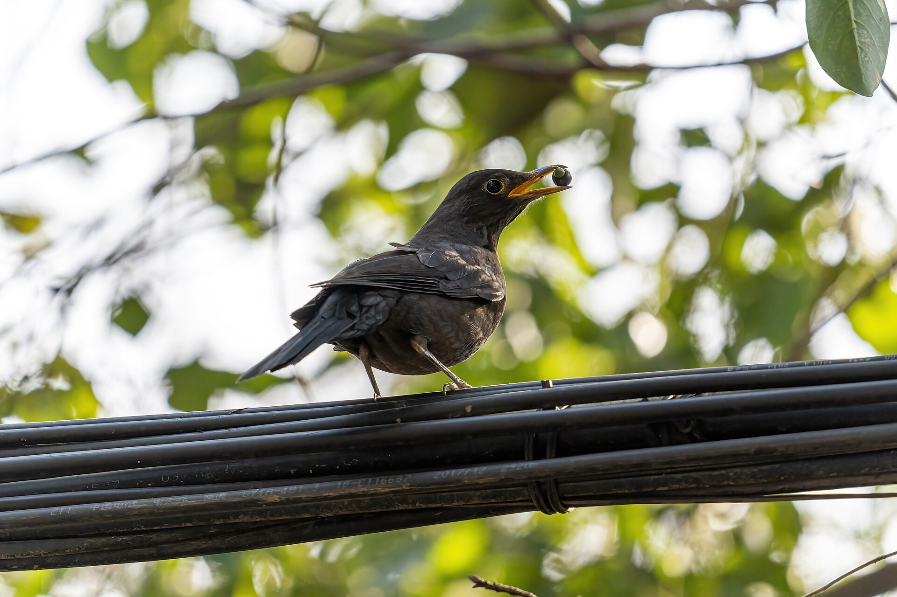

第 2 章
玻璃里的歌声
早晨五点四十分，小区里的声音开始分层。最底下是二环路上早班公交车的引擎轰鸣，那种持续的低频震动贴着地面传过来，震得窗框微微发颤。往上一层是某户人家的闹钟，隔着两道墙闷闷地响，响了六

玻璃里的歌声：历史出版插图
图源：维基共享资源 · Sun Jiao (Interaccoonale) · CC BY 4.0
声就停了。再往上，接近天刚泛白的高度，才是那个声音——一串圆润的、四个音节的哨音，从小区西北角那排香樟树里传出来。
白头鹎在叫。
它叫得很从容，四个音节一组，“咕——咕哩——咕”，像是有人在吹一支音色偏亮的竹笛。停顿两三秒，再重复一遍。停顿的间隙里能听见远处的车流声正在变密，但它的叫声始终穿透在那些低频噪音之上，没有被淹没。
这不是偶然的。过去二十年间，城市里越来越多的白头鹎都在做同一件事：它们把自己的歌声调到了一个刚好能避开交通噪音的频率。这不是修辞。声谱分析可以证明这一点。2008年，一组荷兰鸟类学家在莱顿市对大山雀的鸣唱做了系统录音，发现城市种群的最低鸣声频率平均比郊野种群高出约三百赫兹。这个差异恰好避开了城市交通噪音最集中的频段——两百赫兹以下的那片低频轰鸣区。
论文发表后引发了连锁反应：德国、西班牙、日本的鸟类学家陆续在城市里的乌鸫、欧亚鸲、灰胸绣眼鸟身上发现了同样的频率上移现象。中国的白头鹎进入这个研究视野的时间稍晚一些，但数据一旦出来，结论比大山雀更典型。2015年，华东师范大学的一个研究团队在上海、杭州和南京三座城市采集了白头鹎的鸣声样本，与天目山、莫干山的郊野种群做对比。结果显示，城市白头鹎的最低鸣声频率平均上移了四百二十赫兹，高于大山雀的调整幅度。
这个数字意味着什么？当一辆柴油公交车以四十公里时速驶过时，它产生的噪音峰值在一百到二百赫兹之间——恰好是郊野白头鹎鸣声低频部分的所在位置。如果一只鸟不调整频率，它的歌声会直接被公交车的轰鸣盖住，就像有人在你耳边说话时正好有地铁进站。在城市里，被盖住的声音等于不存在的声音。鸣禽靠鸣唱来宣示领地和吸引配偶，如果对方听不见，这首歌就等于白唱了。
所以白头鹎调高了音调。这不是个体选择的结果。一只鸟不会在某天早晨醒来后决定“今天我要唱得高一点”。频率调整的发生机制远比这更残酷：在城市噪音持续覆盖低频声段的压力下，那些鸣声频率天生偏高的个体更容易让自己的歌声被同类听见。它们因此占据了更好的领地，繁殖成功率更高，后代继承了它们偏高的鸣声频率。一代一代下来，整个城市种群的“声线”就整体上移了。
这个过程叫做“感官驱动的快速演化”。它不需要地质年代的时间尺度，在城市化这样剧烈的选择压力下，种群水平的声学特征改变可以在几十年甚至十几年内完成。白头鹎在中国城市的大规模扩散恰好发生在1990年代至今的三十年间——这段时间足够让自然选择筛出至少十代以上的城市繁殖个体。
但频率调整只是白头鹎应对城市噪音的第一项策略。还有第二项：它改变了鸣唱的时长。把同一批上海白头鹎的录音与天目山种群做比较，会发现另一个显著差异：城市鸟的单次鸣唱持续时间平均缩短了零点八秒。郊野的白头鹎唱完一整串哨音大约需要三到四秒，城市里的个体往往在两秒半左右就收住了。
这个变化的逻辑同样直接。鸣唱是一项高能耗活动。一只体重不到四十克的小鸟站在枝头持续发声，心率会迅速攀升到静止时的三倍以上，能量消耗相当于人类以冲刺速度跑上六层楼。在郊野环境中，这笔能量支出是值得的——完整的鸣唱能充分展示个体的身体状况和领地占有意愿。但在城市里，交通噪音的起伏是不规律的。一辆重型卡车驶过时产生的噪音峰值可以持续五到八秒，如果一只鸟坚持唱完四秒钟的完整曲目，很可能整首歌都被淹没在那阵轰鸣里。能量白花了，信息没传出去。
城市白头鹎的策略是把长曲目拆成短片段。唱两秒，停一下，等噪音波谷出现时再唱两秒。这就像在嘈杂的房间里说话时，人会不自觉地提高音量、缩短句子、挑关键信息先说。鸟在做同样的事。
还有第三项调整，也许是三项中最精妙的一项：它改变了晨鸣的高峰时段。鸣禽普遍有晨鸣习性，在日出前后达到鸣唱高峰。这个时间窗口有明确的生物学意义：经过一整夜的禁食后，鸟需要在清晨大量觅食补充能量，但同时也需要宣示领地——因为一夜过去，边界可能需要重新确认。在郊野环境中，晨鸣高峰通常出现在日出后半小时到一小时之间，那时光线足够亮，气温开始回升，昆虫活动增加，是鸣唱和觅食兼顾的最佳时间点。
城市白头鹎的晨鸣高峰提前了。上海的那项研究记录到了一个清晰的模式：市区白头鹎的晨鸣峰值出现在日出前十五分钟到日出后十分钟之间，比郊野种群提前了至少半小时。
为什么？因为城市的“噪音日出”比天文的日出更早。每天清晨五点半左右，第一批早班公交、垃圾清运车和送货车就开始上路了。交通流量在六点到七点之间骤增，到八点早高峰时达到顶峰，地面噪音频谱图上的低频能量几乎铺满整个坐标轴。白头鹎把晨鸣高峰塞进了天亮前后那段短暂的安静窗口里——天已经亮了，可以看见同伴和对手，但车流还没涌上来。那半小时是城市鸣禽全天声学环境最干净的时段。过了这个窗口再唱歌，就得跟整座城市的发动机抢频率空间。
这三项调整——频率上移、时长缩短、晨鸣提前——合在一起，构成了白头鹎对城市声学环境的一套完整应答方案。它不是某一项单独起作用，而是三项协同：更高的频率确保声音不被低频噪音掩蔽，更短的曲目降低单次能量投入的风险，更早的晨鸣高峰利用了一天中唯一的安静窗口。三者叠加的效果是，一只城市白头鹎在交通噪音环境中的有效通讯距离，与郊野同类在安静环境中的有效通讯距离大致相当。
这就解释了一个看起来矛盾的现象：城市明明比郊野嘈杂得多，但白头鹎在城市里的繁殖密度反而更高。在上海内环的一些老小区里，每公顷绿地可以容纳三到四对繁殖白头鹎，这个密度已经超过了天目山低海拔次生林中的记录。噪音没有把它们赶走，反而筛选出了一批更擅长在噪音中通讯的个体。
到这里为止，我们讨论的都还属于行为可塑性的范畴——个体可以根据环境调整自己的行为。频率、时长、时段这些参数在个体层面有一定弹性，一只鸟在不同噪音水平下确实会做出即时调整。但接下来的问题才是真正关键的：这些调整是不是已经写进了基因？
这个问题的答案目前在白头鹎身上还没有定论——完整的基因组对比研究尚未发表。但已有一些间接证据指向了可遗传分化的方向。2018年，一个德国研究团队对莱比锡市和周边郊野的大山雀种群做了交叉抚育实验。他们将城市种群和郊野种群的雏鸟互换巢穴，由异地的养父母抚养长大，然后记录这些幼鸟成年后的鸣声特征。结果很明确：城市血统的幼鸟即使在郊野环境中长大，其鸣声最低频率仍然高于郊野血统的幼鸟在城市环境中长大的个体。频率差异至少有一部分是遗传的，不是纯粹的后天学习。
白头鹎还没有做过同等严格的控制实验。但有一项间接证据值得注意：南京的研究者在2020年对比了城市白头鹎与郊野白头鹎的鸣声方言结构——所谓“方言”，指的是同一物种在不同地理区域之间出现的鸣声模式差异，类似于人类语言中的地方口音。结果发现，南京市区白头鹎的方言与紫金山郊野种群的方言之间已经出现了显著分化，差异程度大于两个郊野种群之间在同等地理距离下的差异。这种分化模式通常暗示着种群间基因交流的减少——城里的鸟更倾向于与城里的鸟配对繁殖，郊野的鸟也是如此。一旦繁殖隔离形成，城市种群和郊野种群就会开始走上各自的演化轨道。
这就是“感官演化的活案例”这个定位的含义。白头鹎不是简单地学会了在噪音中大声叫唤——它正在被城市噪音塑造成一个与郊野祖先渐行渐远的类型。如果这种趋势持续下去，几百年后的城市白头鹎可能会在鸣声结构上与今天的郊野种群完全不同。到那时，即使两只鸟面对面站着，它们也许已经听不懂对方的方言了。
但城市的感官压力不只有噪音。玻璃幕墙是另一道滤网。
这个问题的规模比大多数人想象的要大得多。美国鱼类及野生动物管理局的一项统计显示，北美每年因撞击玻璃幕墙而死亡的鸟类数量在三亿六千万到九亿八千万只之间。取中位数的话，大约每天有一百万只鸟撞上玻璃。这个数字使玻璃幕墙成为仅次于流浪猫的第二大人类直接导致的鸟类死亡原因。
中国没有同等规模的系统统计数据，但零星的研究已经揭示了问题的严重性。2021年发表的一项针对上海陆家嘴区域的调查在三十天内记录了超过一千二百起鸟类撞击玻璃的事件，涉及四十三个物种。高发时段集中在春秋迁徙季，但留鸟的撞击记录同样不容忽视——尤其是在繁殖期，雄鸟会因为看到玻璃反射的“竞争对手”而反复撞击同一扇窗户。
玻璃为什么会杀死鸟？原因有两个，分别对应两种不同的感官陷阱。第一种是透明玻璃制造的“通道幻觉”。当鸟从一定角度看过去时，透明的玻璃不可见，玻璃后面的天空、绿植或另一侧的窗户构成了一个连续的视觉空间。鸟以为可以飞过去，然后以每小时三十到五十公里的速度撞上去。这种撞击通常发生在建筑物的连廊、公交站透明顶棚和落地窗上。
第二种是反射玻璃制造的“镜像幻觉”。玻璃幕墙反射出天空、云层和周围的树木，看起来就是一片真实的栖息地。鸟朝那片反射的树林飞去，撞上的却是坚硬的光滑表面。这种撞击更容易发生在繁殖期——雄鸟看到反射中自己的镜像时，会误以为是入侵领地的竞争者，于是发起攻击性撞击。有些个体甚至会连续数天撞击同一扇窗户，直到力竭或重伤。
白头鹎在这两种玻璃陷阱面前的表现如何？目前没有专门针对这一物种的撞击统计数据。但有一项行为观察提供了间接线索：在杭州西湖周边的高反射玻璃建筑附近，研究者记录了不同鸟类对玻璃反射影像的反应模式。白头鹎在面对玻璃反射时表现出了比其他鸣禽更快的“识别—回避”反应：它会在接近玻璃前先做一个短暂的悬停动作，似乎在用某种方式检测前方的表面性质。
这个悬停动作本身可能就是选择压力的结果。在城市环境中繁殖了十代以上的白头鹎种群中，那些天生对反射表面缺乏辨识能力的个体更可能在第一次撞击后就死亡或丧失繁殖能力。留下来的个体携带了更强的视觉辨识基因——或者至少是更谨慎的行为倾向。这不是学习，这是过滤。
但这道滤网还没有筛完。城市里新建的玻璃幕墙面积每年都在增加。2023年中国新增建筑玻璃幕墙面积约为一点二亿平方米，其中相当一部分安装在中高层商业建筑上——恰好是迁徙鸟类和城市留鸟活动的高度范围。如果玻璃幕墙的扩张速度超过了鸟类辨识能力的演化速度，那么即使是白头鹎这样适应力极强的物种，也可能在某一天撞上自己演化的天花板。
现在让我们回到声音。刚才说过，城市白头鹎把晨鸣高峰提前到了天亮前后的安静窗口里。这意味着什么？意味着如果你在春天早晨六点之前醒来——不用闹钟，是被鸟叫声叫醒的那种醒来——你听到的第一个声音大概率来自白头鹎。
这本身就是一种新的城市生态关系的起点。在传统的人鸟关系中，鸟鸣对人类的意义主要是审美性的：好听、悦耳、象征田园诗意。但在城市声学环境日益恶化的背景下，白头鹎的鸣唱获得了一层新的功能：它成了一个“声学生态位”的指示器。如果一个小区清晨能听到清晰的白头鹎鸣唱，说明这个区域的低频噪音水平还没超过临界阈值；如果听不到了，可能是附近新建的高架路或工地改变了声学环境。
这种指示功能反过来也影响了人对鸟的态度。在一些老旧小区里，居民对白头鹎的存在表现出明显的容忍甚至欢迎——不是因为它们好看（白头鹎的羽色其实相当朴素），而是因为它们好听。这种偏好看似微不足道，但在社区绿化的管理决策中会产生实际后果：如果一个小区因为鸟鸣而受到居民喜爱，物业就更可能保留那些高大的香樟和女贞树——恰好是白头鹎偏爱的筑巢树种。
这不是单向的利用关系。白头鹎从人这里得到了栖息地和相对稳定的食物来源（尤其是在冬季，城市里的女贞、火棘等观果植物的果实是它们重要的越冬食物），人从白头鹎那里得到了一个清晨的声学标志和一个判断环境质量的感官指标。双方都没有“意图”建立这种关系——鸟只是在寻找适合唱歌和繁殖的地方，人只是在选择自己喜欢的居住环境——但两种选择的叠加产生了一个稳定的共生结构。
这就是本书一直在追踪的那个核心命题的一个侧面：城市不是把自然消灭了，而是把自然重新组织成了一套新的人与非人物种之间的交换网络。麻雀用食物垃圾交换了栖息许可（我们在上一章看到过这个机制），白头鹎则用歌声交换了人的容忍和绿化空间的保留。
这两笔交易的性质是不同的。麻雀的交易依赖的是人类过剩的食物资源——早餐摊的碎屑、垃圾桶里的残渣、广场上的投喂谷物——这些资源的供给是不稳定的，取决于人的经济活动和行为习惯的变化。当一条街上的早餐摊因为城市管理而消失时（上一章结尾的那个场景），麻雀就会从那条街上退却。白头鹎的交易依赖的是人类对某种环境品质的需求——安静、有树、清晨能听到鸟叫——这种需求的弹性比食物供给小得多。一个人可以今天不吃包子改吃面包，但他不太可能今天觉得鸟鸣悦耳明天就觉得刺耳。审美偏好的稳定性使得以声音为核心的人鸟关系比以食物为核心的关系更持久。
这也是为什么在过去三十年间，当麻雀在许多老城区因食物条件变化而收缩分布范围时，白头鹎却在同期的绿化扩张中实现了快速扩散。它不是简单地“因为树多了所以来了”——树多了确实提供了前提条件，但真正让白头鹎在城市生态位竞争中胜出的，是它对声学环境的主动适应以及由此建立的与人之间的声音纽带。
现在来看看这个扩散的具体规模。白头鹎（Pycnonotus sinensis），又名白头翁，是鹎属小型鸣禽，其种加词“sinensis”意为“来自中国”。它的传统分布区大致以长江流域为中心，北界在秦岭—淮河一线附近，南界在南岭山脉北麓，西界在四川盆地东缘。这个范围覆盖了中国东部和中部的大部分低海拔地区，但在二十世纪八十年代之前，它在北方城市和东南沿海城市中的数量并不突出。
变化发生在1990年代之后。2006年发表的一项全国性鸟类分布调查显示，白头鹎的分布北界在十五年间向北推进了约二百公里，进入了河北南部和山东西北部的一些城市。同期，它在福建沿海城市（福州、厦门、泉州）的繁殖记录从零星变为常见。到2015年左右，北京的城市公园中已经可以稳定观察到越冬白头鹎种群——这在三十年前是罕见的。
扩散的速度在不同的方向上并不均匀。向北的推进相对缓慢，可能是因为冬季低温限制了存活率；向东部沿海城市的扩散则快得多，几乎与中国城市化率最高的沿海城市群的绿化建设同步。上海的城市绿化覆盖率从1990年的百分之十二上升到2020年的百分之三十九，同期白头鹎在上海公园鸟类群落中的相对多度从不到百分之五上升到超过百分之二十。在上海，它与麻雀、乌鸫、珠颈斑鸠并列被称为“四大金刚”，这一民间称谓恰恰突显了它作为常见城市鸟的地位。
这里有一个容易被忽视的细节：白头鹎扩散到新城市后所做的第一件事不是找食物，而是找声音空间。新定居的白头鹎雄鸟会在到达后的几天内开始鸣唱，用歌声探测周围环境中已有的声学竞争者——主要是同种的其他雄鸟和其他鸣禽物种。它会选择那些声学空间相对空置的区域建立领地：既没有同种雄鸟的强烈对抗，也没有其他鸣禽在相同频段的密集覆盖。这个过程叫做“声学生态位划分”，本质上就是把可用的声音频段像不动产一样分割和占据。
城市环境中的声学生态位比郊野更复杂也更破碎。交通噪音占据了低频段，空调外机和施工噪音占据了中低频段的某些窄带，人类谈话和手机铃声随机散布在中高频段各处。留给鸣禽的可用频段本来就不多。
白头鹎的频率上移策略使它进入了一个竞争相对较少的频段——大约在两到五千赫兹之间——这个频段高于大部分交通噪音的主能量区，又低于人类听觉最敏感的频率范围（人类对三千赫兹左右的声响最敏感，但城市背景噪音在这一频段恰好有一个低谷）。换句话说，白头鹎找到的不仅仅是“唱得更高”这个方法，而是一个精确的声学窗口：足够高以避开低频噪音的掩蔽，又没有高到让鸣唱变得刺耳或容易被衰减掉（高频声波在空气中的衰减速度比低频快）。这个窗口的位置不是它主动“选择”的——是自然选择替它筛选出来的。
现在我们回到开头那个清晨的场景。五点五十分，那只香樟树里的白头鹎还在叫。它的叫声此刻更密集了——间隔从两三秒缩短到一秒左右，音节组数从四音节变成了五音节甚至六音节的连续哨音。这是晨鸣高峰即将结束的信号：它在抓紧最后几分钟的安静窗口完成领地宣示。
六点零五分，东二环方向的车流声突然变大了一档。早高峰的第一波浪涌上来了。白头鹎的鸣唱频率在接下来的十分钟内急剧下降。到六点一刻左右，它几乎完全沉默了——偶尔发出一两声短促的联络鸣叫（那种单音节的“唧”声），但不再唱完整的歌曲。它的晨鸣高峰结束了。
香樟树下方的草坪上有什么东西在动。那是一只乌鸫。它的体型比白头鹎大了将近一倍，全身羽毛是深褐近黑的颜色——雄鸟会更黑一些——喙是鲜明的橙黄色。它没有在唱歌。它在草坪上用一种独特的姿态移动：低头跑几步，突然停住，歪着脑袋侧耳听一两秒，然后用喙猛地扎进草丛根部，拽出一条蚯蚓。
白头鹎在树冠层活动时几乎不会落到地面上来觅食。它的食谱以果实和昆虫为主：春夏两季取食树冠层和灌木丛中的鳞翅目幼虫、蚜虫和飞蚁；秋冬两季转向女贞、火棘、枸骨等植物的果实。它偶尔会在地面捡拾落果或捕捉弹跳的蝗虫，但那不是它的主要觅食层。
乌鸫正好相反。它在欧洲城市中已经定居了超过一个世纪，发展出了一套高度依赖地面觅食的策略：蚯蚓是它的主食之一，草坪和疏松的花坛土壤是它最偏爱的觅食基质。在中国的城市里，乌鸫正在经历从冬候鸟向留鸟的转变——越来越多的个体选择全年留在城市中繁殖而不是返回北方——这个过程恰好与城市草坪面积的增加同步。
两只鸟共享同一片绿地：白头鹎占据树冠和中层灌木丛，乌鸫占据地面和低矮灌丛的下层。它们之间的直接竞争并不激烈——食谱重叠有限，活动空间垂直错开——但它们对城市环境的利用方式代表了两种截然不同的策略。
白头鹎的策略是感官代偿：用更高的频率、更短的曲目、更早的时间窗口来对抗噪音压力，把声音变成在城市中立足的核心竞争力。乌鸫的策略不同。它也有鸣唱——事实上乌鸫的鸣唱在欧洲文学中被反复赞美为“黄昏中最优美的鸟鸣”——但它应对城市的方式主要不在声音层面。乌鸫在欧洲城市中演化出了更短的警戒距离（允许人类靠得更近才起飞）、更强的夜间活动能力（利用路灯照明延长觅食时间）以及对高密度建筑环境的更强容忍度。这些调整更多集中在行为和空间利用层面，而非感官层面。
两种策略哪一种更“成功”？目前还无法判断。白头鹎在中国城市的扩散速度确实很快，但乌鸫在欧洲城市的百年定居史证明了它的策略同样有效——而且它正在中国城市中复制这个模式。这两种策略将在未来的城市生态位竞争中不断碰撞、重叠和分化。它们之间的关系不是简单的竞争或共存，而是一组对照实验：同一道城市考卷上的两道不同答案。
下午五点半，天色开始转暗。那只白头鹎又回到了香樟树上——不是早晨那根最高的横枝，而是稍低一些的一根侧枝上。它发出了一串短促的单音节联络叫声，像是在确认周围的安全状况。然后它安静下来，把头埋进肩羽里，开始为即将到来的夜晚保存体温。
草坪上的乌鸫还在觅食。它在路灯亮起来之前的最后半小时里加快了动作节奏——跑几步、停下、歪头听、啄下去——这套动作已经重复了上百次。路灯将在六点十分自动亮起，到那时它会继续觅食半小时左右再归巢。
两只鸟在同一片绿地里度过了各自的春日一天。它们解决的是不同的问题：一个是声音的穿透力，一个是地面的可觅食性；一个把压力转化成了更高效的通讯系统，一个把压力转化成了更灵活的空间行为。但它们面对的是同一座城市。这座城市的噪音、玻璃、灯光和人类偏好正在同时作用于它们身上，塑造出两条不同的演化轨迹。
把这两条轨迹放在一起看——就像把两枚不同年代的地层化石并排摆在灯下——才能看清城市生态这张网的真正结构。它不是一张平面地图上的物种分布清单。它是一套垂直分层的、动态调整的、由感官和行为共同编织的压力—响应网络。白头鹎在这张网里占据的那一层叫做“声音”。它在那一层里做得很好——好到足以让一个清晨被车流声包围的人推开窗户时，听见的不是发动机的低吼，而是四声圆润的哨音从香樟树梢落下来。